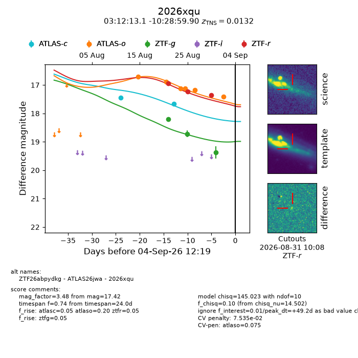
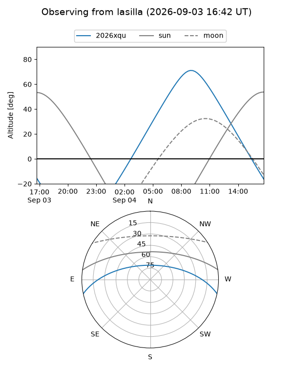
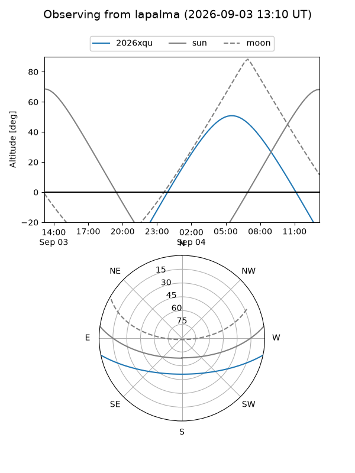
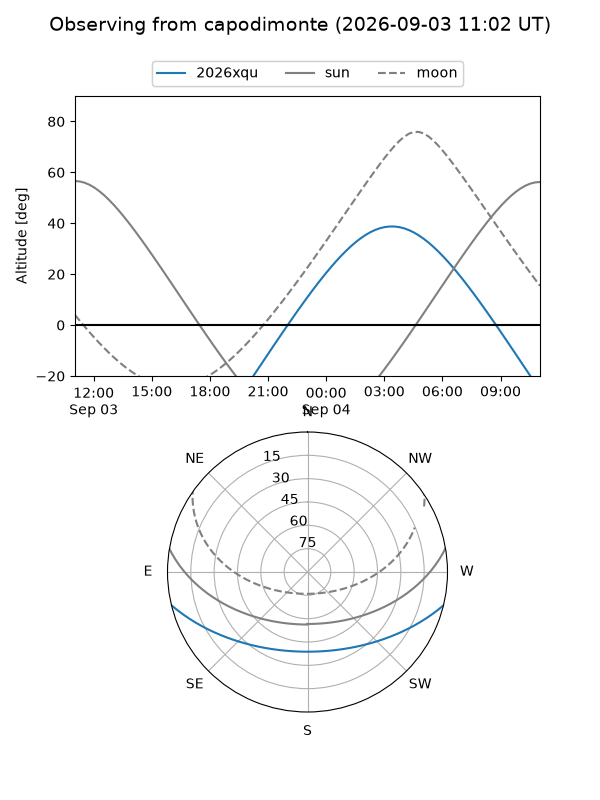
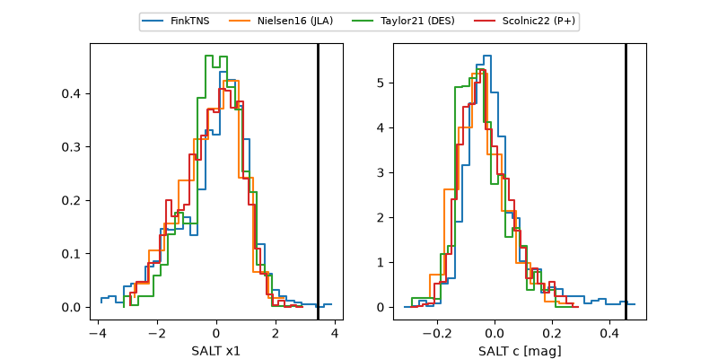

2026xqu
Target 2026xqu at 2026-09-04 12:20
Aliases and brokers:
FINK-ZTF: ztf.fink-portal.org/ZTF26abpydkg
Lasair-ZTF: lasair-ztf.lsst.ac.uk/objects/ZTF26abpydkg
ALeRCE-ZTF: alerce.online/object/ZTF26abpydkg
YSE-PZ: ziggy.ucolick.org/yse/transient_detail/2026xqu
TNS name: wis-tns.org/object/2026xqu
Direct TNS query: direct search
alt names
ZTF26abpydkg (ztf,fink_ztf)
2026xqu (tns,yse)
ATLAS26jwa (atlas)
Coordinates:
equatorial (ra, dec) = 48.0545,-10.48331
equatorial (HMS+DMS) = 03:12:13.07,-10:28:59.90
galactic (l, b) = (193.0929,-52.95094)
Flags:
TNS type: SN Ia-pec
TNS redshift: 0.0132
peak dt: +49.2
likely cv: !!
Photometry:
last atlasc=17.66, atlaso=17.42, ztfg=19.38, ztfr=17.36
2 atlasc, 6 atlaso, 3 ztfg, 3 ztfr detections
Lightcurve

Visibility



Additional plots
